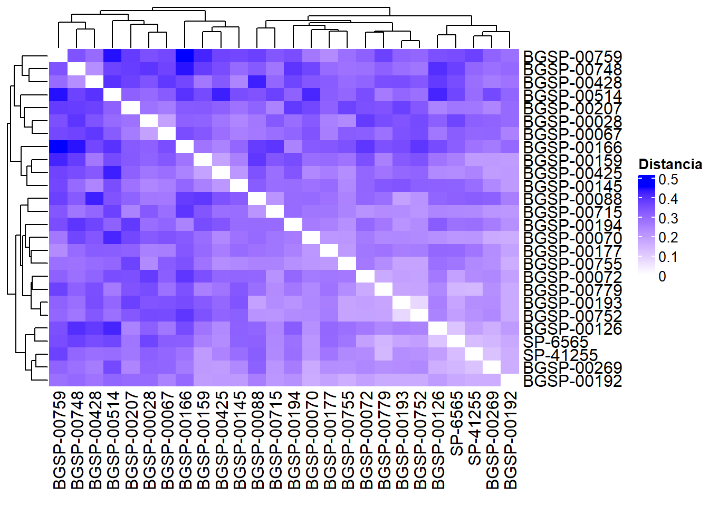

Capítulo 1 Caracterización de entradas de algodón (Gossypium hirsutum L.) del banco de germoplasma de INTA mediante caracteres morfo-fisiológicos
1.2 Objetivos
Caracterizar entradas de algodón del banco de germoplasma de INTA con diferente procedencia mediante caracteres morfológicos relacionados al rendimiento.
Evaluar procesos fisiológicos que intervienen en la determinación del rendimiento de fibra de entradas de algodón del banco de germoplasma de INTA.
1.3 Materiales y métodos
Los ensayos se realizaron en invernadero con condiciones controladas en la Estación Experimental INTA Reconquista. Se utilizaron macetas de 5 litros con 2,2 Kg de suelo de monte (pH: 6,7, P disp: 165,7 mg Kg-1, Na+ 0,6 cmol+Kg-1, K+: 0,8 cmol+Kg-1, Ca+2: 27,0 cmol+Kg-1, Mg+2: 2,2 cmol+Kg-1, NH4: 76,30 mg kg-1, NO3: 86,1 mg Kg-1) y de 400 g de sustrato comercial (GrowMix Multipro), en el cual se colocó una planta por maceta.
1.3.1 Caracterización morfológica de 26 entradas de algodón (Gossypium hirsutum L.)
En el estudio se llevó a cabo una caracterización inicial de 26 entradas (Tabla 1.1) de algodón (Gossypium hirsutum L.) del banco de germoplasma utilizando un diseño experimental en bloques completos al azar con tres repeticiones.
| Entradas | Procedencia | Entradas | Procedencia |
|---|---|---|---|
| BGSP-00166* | Argentina | BGSP-00748 | China |
| BGSP-00177 | Argentina | BGSP-00752 | China |
| BGSP-00192 | Argentina | BGSP-00755 | China |
| BGSP-00193 | Argentina | BGSP-00759 | China |
| BGSP-00194 | Argentina | BGSP-00779 | China |
| BGSP-00207* | Argentina | BGSP-00067 | Costa de Marfil |
| BGSP-00269* | Argentina | BGSP-00028 | EEUU |
| SP 41255* | Argentina-Línea avanzada | BGSP-00145 | EEUU |
| SP 6565* | Argentina-Línea avanzada | BGSP-00159* | EEUU |
| BGSP-00514 | Australia | BGSP-00425* | EEUU |
| BGSP-00072 | Camerún | BGSP-00428 | EEUU |
| BGSP-00088 | Camerún | BGSP-00715 | Pakistán |
| BGSP-00070 | Chad | BGSP-00126* | Senegal |
| * Entradas que fueron seleccionadas para un mayor análisis |
1.3.1.1 Variables medidas
Las variables que se mencionan a continuación fueron registradas en todas las plantas de las 26 entradas:
Características morfológicas cualitativas: Estas variables se registraron durante la etapa de floración de las plantas según los descriptores de INASE
(colocar cita). Forma de la planta, aspecto de la canopia, tipo de floraciones, forma y pubescencia de la hoja, tipo de bráctea y forma de cápsula.Características morfológicas cuantitativas: Las mediciones se realizaron en la etapa de final de ciclo de las plantas, siguiendo estos métodos: Altura de planta (AP en cm, medido desde la base del tallo hasta el ápice), Altura a la primera rama reproductiva (A1RR en cm, medido desde la base del tallo hasta la primera rama reproductiva), número de nudos (NN, número de nudos presentes en el tallo), número de ramas vegetativas (NRV) y reproductivas (NRR), nudo de inserción de la primera rama reproductiva (N1RR, nudo donde se inserta la 1º rama reproductiva en la planta), y distancia de la primera posición al tallo principal (D1P en cm, distancia que existe entre el tallo principal y la primera posición de la primera rama reproductiva de la planta).
Rendimiento y sus componentes: Para calcular el rendimiento de las diferentes entradas y sus componentes se efectuaron las siguientes mediciones: Rendimiento bruto de algodón (RB, en g): se recolectó la fibra-semilla de algodón de todas las cápsulas presentes en las plantas. Las muestras obtenidas fueron pesadas en balanzas de precisión y se realizó medición de la humedad de cada una de ellas; Rendimiento de fibra al desmote (RFD, en %): se tomó cada muestra de algodón proveniente de las mediciones de rendimiento bruto, se realizó el desmote en una mini-desmotadora experimental y se pesó en una balanza de precisión la fibra y semillas por separado. El rendimiento de fibra al desmote fue la relación entre el peso de la fibra sobre el peso de la fibra más la semilla; Rendimiento de fibra (RF en g): se multiplicó el rendimiento bruto de algodón por el rendimiento de fibra al desmote obtenido; Nº de cápsulas por planta (NC): se determinó mediante recuento de todas las cápsulas presentes en las plantas; Peso de cápsulas (PC): se dividió el rendimiento bruto de algodón por planta por el número de cápsula por plantas
Parámetros de calidad tecnológica de fibra de algodón: con el total de plantas de cada entrada se hizo un pool de muestras para obtener una medición debido a los requisitos de peso mínimo de muestra de fibra del instrumento de medición. Las muestras de fibra de algodón obtenidas se enviaron al laboratorio de HVI (Uster 1000) de la Asociación para la Promoción de la Producción (APPA) en Reconquista, Santa Fe. Los parámetros de calidad tecnológica de fibra registrados fueron: Índice de Hilabilidad (SCI, por sus siglas en inglés), Micronaire (Mic), Índice de madurez (Mac), longitud promedio de la mitad superior (UHML en mm, por sus siglas en inglés), longitud media (ML, por sus siglas en inglés), índice de uniformidad (UI en %, por sus siglas en inglés), índice de fibras cortas (SFI, por sus siglas en inglés), resistencia de fibra (Str en g tex-1), elongación (Elg en %), contenido de humedad de la muestra, color (Rd y +b), grado de color (C.G) y contenido de basura.
Fenología: Tiempo en días desde la emergencia para alcanzar los estados de primer pimpollo (DPP), primera flor abierta (DPF), cut out (DCO), primera bocha abierta (DPCA) y fin de ciclo (DFC). El estado de cut out o fin de floración efectiva se determina cuando el número de nudos por encima de la última flor blanca en el tallo sea menor que 4 (Bourland et al., 1992).
1.3.2 Caracterización de ocho entradas seleccionadas de algodón (Gossypium hirsutum L.)
Las ocho entradas fueron seleccionadas por sus características contrastantes en rendimiento, sus componentes (principalmente RFD) y calidad de fibra. También se incluyeron algunas con bajo número de RV y canopia compacta. Estas entradas, identificadas con un asterisco en la Tabla 1.1, también fueron evaluadas para analizar procesos fisiológicos involucrados en la determinación del rendimiento de fibra en algodón.
1.3.2.1 Variables medidas
La medición de las variables fisiológicas, como fotosíntesis, contenido de clorofila y apertura y cierre estomático, se llevaron a cabo en tres momentos durante el ciclo de la planta, correspondiente a 55, 70 y 85 días después de la emergencia. Fue realizado en un solo año de evaluación con un diseño experimental en bloques completos al azar. Los equipos utilizados para las mediciones propuestas fueron a) Fotosíntesis: LICOR 6400; b) Contenido de clorofila: Minolta SPAD 502; c) Apertura y cierre estomático: LICOR 6400.
Para profundizar el análisis, se realizaron experimentos adicionales repetidos en dos momentos, con nueve repeticiones cada vez, utilizando un diseño en bloques completos al azar. Se aumentó la cantidad de bloques para mejorar la representatividad de los parámetros de calidad de fibra y permitir un análisis estadístico más preciso. Se registraron las variables de rendimiento y calidad de fibra mencinados anteriormente sumado las siguientes variables: número de semillas por cápsula (NSC)(Worley et al., 1974), índice de fibra (IF en g, peso de la fibra proveniente de 100 semillas) y el índice de semillas (IS en g, peso de 100 semillas de cada muestra) (Pettigrew et al., 2013).
Por otra parte, se realizaron muestreos destructivos de plantas para la determinación de materia seca y partición de los asimilados. Los cortes se realizaron en cuatro momentos, correspondientes a los estados fenológicos primer pimpollo, primera flor, primera bocha abierta y fin de ciclo. En cada uno de estos momentos se seccionaron las plantas en tallo, ramas reproductivas, ramas vegetativas, pimpollos y flores, bochas cerradas, capsulas abiertas, fibra y rebrote de tallo según el momento de muestreo. Todas las muestras de las partes de la planta fueron llevadas a estufa a 65 º C hasta peso constante (96 horas). El ensayo se realizó en un diseño en bloques al azar con arreglo en parcelas divididas, con los 4 momentos de corte como parcela principal y las entradas como subparcela, con cuatro repeticiones. En estos cuatros momentos mencionados también se midieron las siguientes variables: Área foliar: para el cálculo de esta variable, se midieron todas las hojas de las plantas a través de los equipos LICOR 3000 y LICOR 3050; viii) Dinámica de la floración: se realizaron mapeos de dinámica de floración en todas las plantas seleccionadas para la partición de asimilados. Este procedimiento se realiza registrando en cada una de las posiciones reproductivas que genera la planta, la presencia de un pimpollo, una flor, una bocha verde, una cápsula abierta o un aborto (Kerby & Hake, 1996). Con estos datos se realizó la dinámica de floración de las diferentes entradas y porcentaje de retención final a la que llegan cada una de las plantas seleccionadas para el mapeo.
1.3.3 Análisis estadístico
Análisis estadístico de 26 entradas
Para las características morfológicas cualitativas, se analizaron las frecuencias relativas de cada descriptor evaluado en las entradas del banco de germoplasma. En las características cuantitativas, se realizó un análisis de varianza (ANOVA) para determinar la significancia de las diferencias observadas entre las entradas en los parámetros evaluados. Los parámetros con diferencias significativas fueron sometidos a comparaciones múltiples mediante la prueba L.S.D. de Fisher (p ≤ 0.05). Además, se llevó a cabo un análisis de conglomerados jerárquicos utilizando la métrica de distancia de Gower y el método Ward.D, integrando las características cualitativas y cuantitativas. Este análisis permitió identificar agrupaciones homogéneas de entradas, lo cual se visualizó en dendrogramas. Para facilitar la interpretación de las relaciones entre las entradas, se utilizó un mapa de calor que incluye clustering en filas y columnas. Los análisis fueron realizados empleando el software estadístico R (versión 4.4.2) junto con paquetes como cluster, dplyr y ComplexHeatmap.
Análisis estadístico de ocho entradas
Para evaluar las diferencias entre las entradas seleccionadas de algodón (Gossypium hirsutum L.) en términos de rendimiento, componentes del rendimiento y calidad de fibra, se utilizaron modelos lineales mixtos (LMM, por sus siglas en inglés). El análisis de varianza (ANOVA) se llevó a cabo con el paquete nlme en R, empleando la metodología de Máxima Verosimilitud Restringida (REML). Los modelos incluyeron las entradas como efecto fijo y consideraron como efectos aleatorios el experimento y la repetición, con el propósito de controlar la variabilidad inherente a estas fuentes. Para identificar diferencias significativas entre las medias de las entradas (p ≤ 0.05), se realizaron comparaciones múltiples mediante el método de Mínima Diferencia Significativa (LSD, por sus siglas en inglés), utilizando la biblioteca predictmeans.
Además, para explorar las asociaciones entre los caracteres medidos y reducir la dimensionalidad de los datos, se llevó a cabo un análisis de componentes principales (PCA). Las correlaciones entre caracteres se evaluaron mediante el coeficiente de correlación de Spearman, clasificándolas como fuertes, moderadas o bajas según su magnitud.
Para evaluar la influencia de las entradas y los momentos de medición sobre la biomasa total, su partición y la retención de estructuras reproductivas, se emplearon modelos lineales mixtos (LMM) adaptados para un diseño en bloques en parcelas divididas, utilizando el paquete nlme en R. Los factores Momento, Entradas y su interacción (Momento:Entradas) se incluyeron como efectos fijos, mientras que los efectos aleatorios consideraron el experimento, los bloques y los momentos (parcela principal). Este enfoque permitió capturar adecuadamente la variabilidad en los datos y modelar las diferencias entre parcelas y subparcelas. Además, se implementaron estructuras de varianza específicas (varIdent) para abordar la heterogeneidad entre los momentos de medición.
Para el análisis de rasgos fisiológicos, se abordaron como medidas repetidas en el tiempo. Los modelos evaluaron la influencia de los días después de la emergencia (DDE), las entradas y su interacción (DDE:Entradas) como efectos fijos, mientras que los efectos aleatorios incluyeron bloque e individuo para capturar la variabilidad experimental. Este análisis permitió estudiar las diferencias entre entradas y su comportamiento dinámico a lo largo del tiempo, incorporando estructuras específicas para manejar datos longitudinales.
1.4 Resultados
1.4.1 Caracterización morfológica de 26 entradas de algodón (Gossypium hirsutum L.)
1.4.1.1 Características morfológicas cualitativas
La tabla ?? detalla las características de las entradas del banco de germoplasma de algodón evaluadas. En términos de la forma de la planta, el 61,5% fueron cilíndricas y el 38,5% fueron cónicas. En cuanto al aspecto de la canopia, se destacaron las categorías “medio” (69,2%) y “abierta” (23,1%). Sin embargo, algunas antradas presentaron una canopia “compacta” (7,7%), como los genotipos BGSP-00166 y BGSP-00194. El tipo de floración varió entre individual (23,1%), agrupada (7,7%) o medio agrupada (69,2%). Las hojas se presentan principalmente en forma palmada (96,1%) y plana (96,1%), y el resto en forma digitada (3,9%) y en copa (3,9%) , con niveles variados de pubescencia (11,5% para pubescencia escasa y fuerte, y 76,9% para pubescencia media). Solo la entrada BGSP-00514 presentó forma digitada o también conocida como tipo “Okra”. En todas las entradas, el tipo de bráctea es normal, mientras que la forma de la bocha varió entre cónica (88,5%), elíptica (7,7%) y redonda (3,8%).
| Entradas | Forma | Canopia | Tipo Floración | Forma | Lámina | Pubescencia | Tipo | Forma |
|---|---|---|---|---|---|---|---|---|
| BGSP-00028 | Cónica | Abierta | Individual | Palmada | Plana | Escasa | Normal | Cónica |
| BGSP-00067 | Cónica | Abierta | Individual | Palmada | Plana | Escasa | Normal | Cónica |
| BGSP-00070 | Cilíndrica | Medio | Medio Agrupada | Palmada | Plana | Media | Normal | Cónica |
| BGSP-00072 | Cilíndrica | Medio | Medio Agrupada | Palmada | Plana | Media | Normal | Cónica |
| BGSP-00088 | Cónica | Medio | Individual | Palmada | Plana | Fuerte | Normal | Cónica |
| BGSP-00126 | Cilíndrica | Medio | Medio Agrupada | Palmada | Plana | Escasa | Normal | Cónica |
| BGSP-00145 | Cónica | Medio | Individual | Palmada | Plana | Media | Normal | Cónica |
| BGSP-00159 | Cilíndrica | Medio | Medio Agrupada | Palmada | Plana | Media | Normal | Cónica |
| BGSP-00166 | Cilíndrica | Compacta | Agrupada | Palmada | Plana | Media | Normal | Cónica |
| BGSP-00177 | Cónica | Abierta | Medio Agrupada | Palmada | Plana | Media | Normal | Cónica |
| BGSP-00192 | Cilíndrica | Medio | Medio Agrupada | Palmada | Plana | Media | Normal | Cónica |
| BGSP-00193 | Cilíndrica | Medio | Medio Agrupada | Palmada | Plana | Media | Normal | Cónica |
| BGSP-00194 | Cilíndrica | Compacta | Agrupada | Palmada | Plana | Media | Normal | Cónica |
| BGSP-00207 | Cónica | Abierta | Individual | Palmada | Plana | Fuerte | Normal | Cónica |
| BGSP-00269 | Cilíndrica | Medio | Medio Agrupada | Palmada | Plana | Media | Normal | Cónica |
| BGSP-00425 | Cilíndrica | Medio | Medio Agrupada | Palmada | Plana | Media | Normal | Cónica |
| BGSP-00428 | Cilíndrica | Medio | Medio Agrupada | Palmada | Plana | Media | Normal | Redonda |
| BGSP-00514 | Cónica | Abierta | Individual | Digitada (Okra) | Plana | Media | Normal | Cónica |
| BGSP-00715 | Cónica | Medio | Medio Agrupada | Palmada | Plana | Fuerte | Normal | Cónica |
| BGSP-00748 | Cónica | Medio | Medio Agrupada | Palmada | Plana | Media | Normal | Elíptica |
| BGSP-00752 | Cónica | Medio | Medio Agrupada | Palmada | Plana | Media | Normal | Cónica |
| BGSP-00755 | Cilíndrica | Medio | Medio Agrupadas | Palmada | Plana | Media | Normal | Cónica |
| BGSP-00759 | Cilíndrica | Abierta | Medio Agrupada | Palmada | En copa | Media | Normal | Redonda |
| BGSP-00779 | Cilíndrica | Medio | Medio Agrupada | Palmada | Plana | Media | Normal | Cónica |
| SP 41255 | Cilíndrica | Medio | Medio Agrupada | Palmada | Plana | Media | Normal | Cónica |
| SP 6565 | Cilíndrica | Medio | Medio Agrupada | Palmada | Plana | Media | Normal | Cónica |
1.4.1.2 Características morfológicas cuantitativas, rendimiento y sus componentes y calidad de fibra
La tabla ?? muestra los valores medios de las características morfológicas evaluadas de las entradas del banco de germoplasma de algodón (Gossypium hirsutum L.), incluyendo la altura de planta (AP), número de nudos (NN), número de ramas vegetativas (NRV), número de ramas reproductivas (NRR), nudos a la primera rama reproductiva (N1RR), altura a la primera rama reproductiva (A1RR) y distancia de la primera posición al tallo principal (D1P). Los valores de estos parámetros variaron significativamente entre las entradas, con alturas de planta que oscilaron entre 89,0 cm y 126,3 cm, y números de nudos entre 13,0 y 17,0. El número de ramas vegetativas fluctuaron entre 0,3 y 2,7, mientras que el número de ramas reproductivas varió entre 9,7 y 13,3. Los nudos a la primera rama reproductiva estuvieron entre 3,7 a 5,7, y la altura a la primera rama reproductiva varió de 25,0 cm a 40,7 cm. La distancia de la primera posición al tallo principal osciló entre 3,9 cm y 14,3 cm.
La tabla ?? también presenta un resumen de las características de rendimiento, calidad de fibra y fenología de las entradas. Los parámetros medidos incluyen rendimiento bruto de algodón (RB), rendimiento de fibra (RF), rendimiento de fibra al desmote (RFD), peso promedio de capullos (PC), número de capullos (NC), longitud promedio de fibra de la mitad superior (UHML), resistencia de las fibras (Str), micronaire (Mic), índice de uniformidad de fibras (IU), días a primer pimpollo (DPP), días a primera flor (DPF), días a cut out (DCO), días a primera cápsula abierta (DPCA) y días a fin de ciclo (DFC). Los valores muestran una amplia variabilidad entre las entradas, con rendimientos brutos de algodón que oscilaron entre 14,3 g planta-1 y 33,5 g planta-1, rendimientos de fibra que varió de 4,6 g planta-1 a 12,3 g planta-1, peso promedio de capullo entre 2,6 g a 4,7 g y número de capullos entre 4,7 a 8,7. La calidad de la fibra se refleja en características como UHML, que varió de 25,1 mm a 33,9 mm, y la resistencia de las fibras, que osciló entre 21,5 g tex-1 y 37,6 g tex-1. En términos fenológicos, los días a primer pimpollo varió de 22 a 27 días, los días a primera flor de 49 a 55 días, los días a cut out de 73 a 80 días, los días a primera cápsula abierta de 113 a 137 días, y los días a fin de ciclo de 161 a 164 días.
| Entradas | AP | NN | NRV | NRR | N1RR | A1RR | D1P | RB | RF | RFD | PC | NC | UHML | Str | Mic | IU | DPP | DPF | DCO | DPCA | DFC |
|---|---|---|---|---|---|---|---|---|---|---|---|---|---|---|---|---|---|---|---|---|---|
| BGSP-00028 | 106,3 (5,5) | 13,3 (0,9) | 1,0 (0,6) | 10,7 (0,7) | 3,7 (0,3) | 25,3 (0,7) | 9,3 (0,7) | 24,1 (2,0) | 8,7 (0,6) | 36,5 (0,7) | 4,3 (0,3) | 5,7 (0,3) | 30,7 | 34,0 | 3,1 | 84,1 | 25 | 51 | 74 | 118 | 163 |
| BGSP-00067 | 102,0 (4,0) | 14,7 (0,7) | 1,3 (0,3) | 11,0 (0,6) | 4,7 (0,3) | 27,0 (1,7) | 11,0 (1,5) | 23,3 (3,3) | 8,2 (1,0) | 36,0 (1,9) | 2,8 (0,2) | 8,3 (1,2) | 26,8 | 37,0 | 2,9 | 80,8 | 25 | 54 | 74 | 128 | 163 |
| BGSP-00070 | 109,3 (0,3) | 14,3 (0,3) | 1,3 (0,3) | 9,7 (0,3) | 5,7 (0,7) | 40,7 (4,2) | 9,7 (1,9) | 19,9 (1,3) | 7,7 (0,8) | 39,6 (0,8) | 3,4 (0,3) | 6,0 (0,6) | 32,5 | 31,0 | 3,8 | 84,6 | 27 | 53 | 76 | 128 | 163 |
| BGSP-00072 | 113,3 (4,3) | 17,0 (0,0) | 1,3 (0,3) | 13,3 (0,3) | 4,7 (0,3) | 27,3 (3,2) | 7,3 (1,8) | 26,3 (2,2) | 9,8 (0,9) | 38,3 (0,6) | 3,5 (0,4) | 7,7 (0,3) | 28,1 | 28,2 | 4,3 | 82,6 | 25 | 54 | 80 | 130 | 162 |
| BGSP-00088 | 104,3 (5,8) | 14,3 (0,7) | 1,7 (0,3) | 10,7 (0,3) | 4,7 (0,3) | 28,3 (2,7) | 14,3 (1,2) | 31,0 (3,2) | 11,3 (1,1) | 37,1 (0,4) | 4,4 (0,2) | 7,0 (0,6) | 31,6 | 36,5 | 3,5 | 86,2 | 25 | 54 | 78 | 135 | 163 |
| BGSP-00126 | 126,3 (3,8) | 14,9 (0,2) | 1,5 (0,2) | 11,3 (0,3) | 4,6 (0,1) | 37,4 (1,4) | 8,9 (0,9) | 16,0 (0,6) | 6,6 (0,3) | 42,9 (0,3) | 2,7 (0,2) | 6,0 (0,3) | 29,9 | 32,4 | 2,8 | 83,5 | 25 | 54 | 79 | 132 | 163 |
| BGSP-00145 | 89,0 (4,5) | 14,3 (0,3) | 1,0 (0,6) | 11,3 (0,3) | 4,0 (0,0) | 25,7 (0,9) | 9,7 (1,8) | 16,1 (3,1) | 6,1 (1,1) | 38,6 (0,7) | 3,6 (0,6) | 4,7 (0,9) | 26,9 | 26,6 | 3,5 | 80,8 | 25 | 52 | 73 | 121 | 163 |
| BGSP-00159 | 104,3 (3,6) | 14,3 (0,3) | 1,1 (0,2) | 11,0 (0,2) | 4,3 (0,2) | 31,8 (1,9) | 11,4 (0,6) | 14,3 (0,6) | 5,1 (0,2) | 36,8 (0,6) | 2,7 (0,1) | 5,2 (0,2) | 30,0 | 34,4 | 2,5 | 82,7 | 22 | 49 | 74 | 114 | 161 |
| BGSP-00166 | 109,0 (3,0) | 15,2 (0,2) | 0,8 (0,2) | 11,8 (0,3) | 4,4 (0,2) | 30,6 (1,2) | 3,9 (0,6) | 18,2 (0,5) | 5,5 (0,2) | 31,1 (0,4) | 3,6 (0,1) | 5,1 (0,2) | 33,9 | 37,6 | 2,5 | 86,1 | 23 | 52 | 74 | 124 | 163 |
| BGSP-00177 | 103,7 (3,3) | 14,3 (0,3) | 1,7 (0,3) | 10,7 (0,3) | 4,7 (0,3) | 32,7 (3,4) | 13,7 (1,7) | 24,5 (2,2) | 7,9 (0,8) | 33,0 (0,4) | 4,2 (0,8) | 6,0 (0,6) | 29,2 | 30,7 | 4,2 | 82,9 | 26 | 53 | 75 | 127 | 164 |
| BGSP-00192 | 101,3 (5,8) | 15,0 (0,0) | 1,7 (0,3) | 11,0 (0,0) | 5,0 (0,0) | 29,0 (2,1) | 11,3 (0,9) | 18,7 (3,3) | 7,1 (1,1) | 37,9 (2,0) | 3,3 (0,4) | 5,7 (0,3) | 28,2 | 31,9 | 3,5 | 83,3 | 25 | 54 | 76 | 124 | 162 |
| BGSP-00193 | 106,7 (5,5) | 15,3 (0,3) | 2,7 (0,3) | 11,3 (0,3) | 5,0 (0,0) | 30,7 (0,9) | 8,0 (1,7) | 29,4 (3,9) | 10,9 (1,4) | 38,1 (1,8) | 4,2 (0,6) | 7,0 (0,0) | 30,2 | 33,8 | 3,5 | 85,5 | 25 | 55 | 78 | 137 | 162 |
| BGSP-00194 | 92,7 (3,2) | 14,7 (0,3) | 2,3 (0,3) | 10,7 (0,3) | 5,0 (0,0) | 31,3 (0,7) | 5,7 (3,2) | 24,0 (3,1) | 9,6 (1,4) | 40,9 (0,8) | 3,7 (0,4) | 6,7 (0,9) | 29,9 | 32,6 | 3,7 | 85,0 | 25 | 55 | 75 | 118 | 163 |
| BGSP-00207 | 105,0 (8,5) | 15,3 (0,2) | 0,7 (0,2) | 12,2 (0,2) | 4,2 (0,1) | 29,4 (0,8) | 10,1 (1,0) | 16,2 (0,6) | 6,7 (0,2) | 43,6 (0,5) | 2,8 (0,1) | 5,8 (0,2) | 28,6 | 28,4 | 2,8 | 83,2 | 23 | 52 | 79 | 135 | 164 |
| BGSP-00269 | 113,0 (3,7) | 14,7 (0,2) | 1,2 (0,2) | 11,2 (0,2) | 4,4 (0,1) | 34,2 (1,6) | 8,3 (0,8) | 16,9 (0,5) | 7,1 (0,3) | 43,7 (0,5) | 2,9 (0,2) | 6,1 (0,3) | 29,2 | 33,4 | 3,9 | 84,1 | 23 | 52 | 75 | 133 | 163 |
| BGSP-00425 | 105,2 (3,3) | 13,8 (0,1) | 0,9 (0,3) | 10,8 (0,1) | 4,0 (0,0) | 25,5 (0,7) | 8,4 (0,9) | 15,1 (0,5) | 4,6 (0,2) | 31,5 (0,3) | 2,6 (0,1) | 5,8 (0,3) | 32,1 | 32,6 | 2,3 | 82,2 | 25 | 53 | 73 | 130 | 163 |
| BGSP-00428 | 105,3 (7,3) | 15,3 (0,3) | 0,7 (0,3) | 12,0 (0,6) | 4,3 (0,3) | 28,0 (2,9) | 8,7 (2,4) | 21,4 (3,6) | 8,7 (1,4) | 40,1 (0,4) | 4,3 (0,7) | 5,0 (0,6) | 25,1 | 23,1 | 4,0 | 80,0 | 23 | 49 | 74 | 113 | 163 |
| BGSP-00514 | 99,0 (8,0) | 16,0 (0,0) | 2,7 (0,3) | 12,3 (0,3) | 4,7 (0,3) | 25,0 (1,5) | 11,7 (1,7) | 28,0 (2,8) | 11,7 (1,2) | 42,3 (0,4) | 4,2 (0,2) | 6,7 (0,9) | 29,0 | 32,0 | 2,7 | 83,6 | 23 | 52 | 76 | 117 | 161 |
| BGSP-00715 | 102,0 (8,5) | 14,7 (0,9) | 0,3 (0,3) | 11,7 (0,9) | 4,0 (0,0) | 27,3 (2,3) | 13,0 (1,2) | 24,0 (3,6) | 9,8 (1,2) | 41,6 (1,2) | 3,4 (0,4) | 7,0 (0,6) | 27,2 | 31,7 | 4,0 | 83,5 | 24 | 55 | 78 | 134 | 163 |
| BGSP-00748 | 105,7 (0,9) | 15,0 (0,0) | 1,7 (0,3) | 12,0 (0,0) | 4,0 (0,0) | 25,7 (1,2) | 12,0 (0,6) | 33,5 (1,8) | 12,3 (1,0) | 39,0 (2,4) | 4,4 (0,1) | 7,7 (0,3) | 26,3 | 21,5 | 3,9 | 80,9 | 23 | 52 | 74 | 135 | 164 |
| BGSP-00752 | 103,3 (5,2) | 15,3 (0,3) | 2,7 (0,3) | 11,3 (0,3) | 5,0 (0,0) | 29,3 (0,7) | 10,3 (0,9) | 27,2 (2,1) | 11,3 (1,2) | 42,1 (1,9) | 4,1 (0,1) | 6,7 (0,3) | 31,8 | 26,7 | 3,6 | 84,1 | 25 | 55 | 79 | 135 | 162 |
| BGSP-00755 | 97,3 (3,3) | 13,0 (0,0) | 2,7 (0,3) | 10,0 (0,0) | 4,0 (0,0) | 28,7 (0,3) | 10,3 (0,7) | 26,3 (2,0) | 10,0 (0,7) | 38,5 (0,8) | 4,7 (0,2) | 5,7 (0,7) | 29,8 | 31,4 | 3,3 | 84,2 | 25 | 53 | 75 | 124 | 163 |
| BGSP-00759 | 108,3 (5,0) | 14,0 (0,6) | 1,0 (0,6) | 10,0 (1,0) | 5,0 (0,6) | 38,3 (5,5) | 9,7 (2,4) | 24,6 (3,6) | 8,7 (1,5) | 38,3 (1,1) | 4,7 (0,6) | 5,7 (1,5) | 27,8 | 23,9 | 4,1 | 82,3 | 25 | 54 | 77 | 134 | 163 |
| BGSP-00779 | 112,3 (1,9) | 16,0 (0,0) | 1,3 (0,3) | 12,3 (0,3) | 4,7 (0,3) | 30,3 (1,8) | 11,7 (0,7) | 26,3 (1,5) | 10,4 (0,5) | 40,5 (0,7) | 3,0 (0,1) | 8,7 (0,3) | 30,2 | 31,5 | 2,7 | 84,4 | 25 | 55 | 76 | 126 | 161 |
| SP 41255 | 122,3 (2,9) | 15,2 (0,1) | 1,2 (0,2) | 11,8 (0,2) | 4,4 (0,1) | 32,7 (1,1) | 11,2 (0,8) | 20,7 (0,7) | 8,8 (0,4) | 44,7 (0,5) | 2,8 (0,1) | 7,3 (0,3) | 30,9 | 32,3 | 3,0 | 84,1 | 23 | 52 | 76 | 124 | 162 |
| SP 6565 | 120,8 (1,9) | 15,7 (0,2) | 1,3 (0,2) | 12,2 (0,2) | 4,5 (0,2) | 35,8 (1,6) | 8,4 (0,6) | 17,3 (0,5) | 6,9 (0,2) | 41,2 (0,3) | 2,6 (0,1) | 6,8 (0,3) | 29,9 | 33,3 | 3,0 | 84,6 | 25 | 55 | 79 | 131 | 162 |
| p-valor | <0,001 | <0,001 | <0,001 | <0,001 | <0,001 | <0,001 | <0,001 | <0,001 | <0,001 | <0,001 | <0,001 | <0,001 | - | - | - | - | - | - | - | - | - |
| L.S.D Fisher | 17,96 | 1 | 0,99 | 1,05 | 0,74 | 6,29 | 3,89 | 4,3 | 1,76 | 2,46 | 0,76 | 1,42 | - | - | - | - | - | - | - | - | - |
|
Referencias: AP, altura de planta en cm; NN, número de nudos totales en tallo; NRV, Número de ramas vegetativas; NRR, Número de ramas reproductivas; N1RR, Nudos a la primera rama reproductiva; A1RR, Altura a la primera rama reproductiva en cm; D1P, Distancia de la primera posición al tallo principal en cm. RB, Rendimiento bruto en g; RF, Rendimiento de fibra en g; RFD, Rendimiento de fibra al desmote en %; PC, Peso promedio de capullos g; NC, Numero de capullos por planta. UHML, longitud de las fibras en mm; Str, resistencia de las fibras en (ref:uStr); Mic, micronaire; IU, Índice de uniformidad de las fibras en %. DPP, días a primer pimpollo; DPF, días a primera flor; DCO, días a Cut Out; DPCA, días a primer cápsula abierta; DFC, días a fin de ciclo. |

1.4.2 Caracterización de ocho entradas seleccionadas de algodón (Gossypium hirsutum L.)
1.4.2.1 Características de rendimiento y sus componentes y calidad de fibra
Las entradas seleccionadas para una mayor profundización en la evaluación de las características de rendimiento y calidad se muestran en la tabla 1.2. La selección se realizó principalmente mediante los datos mostrados en la tabla ??, eligiendo entradas contrastantes en términos de rendimiento y sus componentes (principalmente RFD) y calidad de fibra. Adicionalmente, se seleccionaron algunas entradas que presentaban baja NRV y aspecto de canopia compacta, como es el caso de la entrada BGSP-00166.
| Entradas | RB | RF | RFD | PC | NC | IS | IF | NSC | UHML | Str | Mic | IU |
|---|---|---|---|---|---|---|---|---|---|---|---|---|
| BGSP-00126 | 30,5 (6,6) | 13,2 (2,9) | 43,1 (0,4) | 3,6 (0,4) | 8,0 (1,0) | 8,7 (0,3) | 6,2 (0,3) | 25,0 (1,6) | 29,8 (0,3) | 30,4 (1,3) | 3,5 (0,4) | 83,8 (1,0) |
| BGSP-00159 | 26,2 (5,4) | 9,5 (1,9) | 36,3 (0,8) | 4,1 (0,5) | 6,2 (0,6) | 10,3 (1,0) | 5,6 (0,7) | 26,8 (0,7) | 28,4 (0,9) | 33,2 (2,1) | 3,7 (0,5) | 82,7 (0,5) |
| BGSP-00166 | 27,5 (4,3) | 8,6 (1,4) | 31,2 (0,3) | 4,6 (0,4) | 5,8 (0,5) | 11,5 (0,5) | 5,0 (0,4) | 28,9 (0,8) | 33,2 (0,5) | 37,3 (2,0) | 3,2 (0,3) | 85,8 (0,6) |
| BGSP-00207 | 30,2 (6,3) | 13,1 (2,7) | 43,5 (0,4) | 3,6 (0,4) | 8,0 (1,0) | 8,3 (0,2) | 6,2 (0,3) | 25,2 (2,0) | 28,3 (0,4) | 29,2 (0,7) | 3,4 (0,3) | 83,5 (0,4) |
| BGSP-00269 | 29,8 (5,8) | 12,9 (2,5) | 43,4 (0,4) | 3,4 (0,2) | 8,6 (1,1) | 8,8 (0,4) | 6,5 (0,2) | 22,8 (1,9) | 28,3 (0,5) | 31,6 (1,2) | 4,3 (0,2) | 83,7 (0,3) |
| BGSP-00425 | 31,5 (7,4) | 11,3 (2,9) | 34,2 (1,2) | 3,6 (0,4) | 8,3 (1,1) | 7,9 (0,4) | 4,0 (0,6) | 30,6 (0,9) | 30,4 (1,0) | 31,3 (1,6) | 3,4 (0,5) | 82,2 (0,2) |
| SP-41255 | 34,2 (6,1) | 15,8 (3,0) | 45,8 (0,6) | 3,7 (0,5) | 9,2 (1,0) | 7,7 (0,1) | 6,2 (0,3) | 26,8 (2,8) | 29,8 (0,7) | 32,2 (1,2) | 3,8 (0,3) | 83,6 (0,7) |
| SP-6565 | 30,1 (5,8) | 12,5 (2,4) | 41,4 (1,0) | 3,7 (0,6) | 8,2 (0,7) | 8,9 (0,4) | 5,9 (0,2) | 25,5 (3,0) | 30,1 (0,5) | 32,5 (0,9) | 3,7 (0,3) | 84,9 (0,6) |
| p-value | 0,005 | <0,001 | <0,001 | 0,002 | <0,001 | <0,001 | <0,001 | 0,014 | <0,001 | 0,017 | <0,001 | 0,003 |
| Fisher’s L.S.D | 3,68 | 1,91 | 1,99 | 0,57 | 1,19 | 1,35 | 0,75 | 4,04 | 1,38 | 4,03 | 0,43 | 1,66 |
|
Referencias: RB: Seed cotton yield in g, LY: Lint yield in g, LP: Lint percentage in %, BW: Boll weight in g, BN: Boll number per plant, SI: Seed index in g, LI: Lint index in g, SNPB: Seed number per boll, FL: Fibre length in mm, FS: Fibre strength g tex-1, Mic: Micronaire, FU: Fibre uniformity in %. |
Las entradas de algodón mostraron diferencias significativas en todos los rasgos relacionados con el rendimiento y la calidad de la fibra (p < 0,05, Tabla 1.2).
La entrada SP-41255 presentó los valores medios más elevados para RB, RF, RFD y NC, con valores de 34,2 g planta-1, 15,8 g planta-1, 45,8 %, y 9,2 capullos planta-1 respectivamente, sin embargo, presentó el valor medio más bajo de IS, con 7,7 g. BGSP-00159 tuvo la media más baja de RB con 26,2 g planta-1. BGSP-00166 tuvo los valores medios más bajos para RF, RFD, MIC y NC con valores de 8,6 g planta-1, 31,1 %, 3,2 y 5,8 capullos planta-1 respectivamente, no obstante, presentó los valores medios más elevados de PC, IS, UHML, Str y IU con valores de 4,6 g capullo-1, 11,5 g, 33,2 mm, 37,3 g tex-1 y 85,8 % respectivamente. BGSP-00269 presentó los valores medios más bajos de PC, NSC y UHML, con valores de 3,4 g capullo-1, 22,8 semilla capullo-1, y 28,3 mm respectivamente, mientras que tuvo el valor medio más alto para IF y Mic con valores de 6,5 g y 4,3. BGSP-00425 tuvo la NSC media mas alta, con un 30,6 semillas cápsula-1 mientras que los valores medios más bajos para IF y IU con valores de 4,0 g y 82,2 %, respectivamente. BGSP-00207 presentó los valores medios más bajos de UHML y Str con valores de 28,3 mm y 29,2 g tex-1 respectivamente. En particular, las accesiones BGSP-00166 y SP-41255 fueron significativamente diferentes para casi todos los caracteres estudiados excepto para NSC (p < 0,01).
Estos resultados indican que existe variación fenotípica entre las accesiones de algodón tanto en términos de rendimiento como de calidad de la fibra.
En el analisis de componentes principales incluyendo todas las variables, el primer componente principal explicó el 45,6% de la varianza de los datos, mientras que el segundo componente principal explicó el 21,9% (Figura 1.1). Los rasgos más asociados con el primer componente fueron RB, Mic, RF, IF y NC, mientras que UHML, Str, IU, IS, NSC, PC y RFD fueron los más asociados con el segundo componente. Las entradas situadas en el cuadrante superior izquierdo fueron BGSP-00166, BGSP-00159 y BGSP-00425, estando estas entradas asociadas con valores más altos de calidad de fibra (UHML, Str, IU) y tamaño de semilla (IS) y valores más bajos en caracteres relacionados con el rendimiento como RB, RF, IF, NC, RFD. Las entradas situadas en el cuadrante inferior derecho como SP-41255, BGSP-00269, BGSP-00207 y BGSP-00126, mostraron un comportamiento opuesto a las descritas.
![Biplot del análisis de componentes principales con puntos que representan las proyecciones de las accesiones (1) y las variables (2) en el espacio definido por las dos primeras dimensiones (Dim) o componentes principales. RB: Rendimiento de algodón bruto en g; RF: Rendimiento de fibra en g; RFD: Rendimiento de fibra al desmote en %; PC: Peso promedio de capullos en g; NC: Número de capullos; IS: Índice de semillas en g; IF: Índice de fibra en g; NSC: Numero de semillas por capullo. UHML: Longitud promedio de fibra de la mitad superior en mm; Str: Resistencia de las fibras g tex-1; Mic: Micronaire; IU: Índice de uniformidad de fibras en %.](figure/chap1/Para_compuestas/PCA_juntas.png)
Figure 1.1: Biplot del análisis de componentes principales con puntos que representan las proyecciones de las accesiones (1) y las variables (2) en el espacio definido por las dos primeras dimensiones (Dim) o componentes principales. RB: Rendimiento de algodón bruto en g; RF: Rendimiento de fibra en g; RFD: Rendimiento de fibra al desmote en %; PC: Peso promedio de capullos en g; NC: Número de capullos; IS: Índice de semillas en g; IF: Índice de fibra en g; NSC: Numero de semillas por capullo. UHML: Longitud promedio de fibra de la mitad superior en mm; Str: Resistencia de las fibras g tex-1; Mic: Micronaire; IU: Índice de uniformidad de fibras en %.
En particular, las entradas BGSP-00166 y SP-41255 presentaron más contraste en cuanto a los rasgos medidos. Estas accesiones mostraron valores diferentes para la mayoría de los rasgos medidos relacionados tanto con el rendimiento como con la calidad de la fibra. Por lo tanto, seleccionamos estas accesiones para realizar un cruce biparental y generar una población segregante para estimar los parámetros genéticos y, a continuación, seleccionar fenotipos prometedores para el rendimiento y los rasgos relacionados con la calidad.
En la Tabla 1.3 se muestran los valores de correlación de Spearman para las caracteristicas de rendimiento de fibra, sus componentes y calidad de fibra.
| RB | RF | RFD | PC | NC | IS | IF | NSC | UHML | Str | Mic | |
|---|---|---|---|---|---|---|---|---|---|---|---|
| RF | .94*** |
|
|||||||||
| RFD | .24 | .48*** |
|
||||||||
| PC | .75*** | .67*** | -.15 |
|
|||||||
| NC | .86*** | .89*** | .42** | .43** |
|
||||||
| IS | .01 | -.09 | -.51*** | .41** | -.27 |
|
|||||
| IF | .52*** | .70*** | .54*** | .49*** | .49*** | .20 |
|
||||
| NSC | .54*** | .38** | -.34* | .69*** | .30* | -.03 | -.06 |
|
|||
| UHML | -.35* | -.46** | -.36* | -.15 | -.42** | .14 | -.46** | .06 |
|
||
| Str | -.14 | -.27 | -.42** | .07 | -.30* | .51*** | -.17 | -.08 | .38** |
|
|
| Mic | .79*** | .83*** | .35* | .64*** | .77*** | .06 | .71*** | .28 | -.53*** | -.23 |
|
| IU | -.05 | -.06 | -.01 | .09 | -.10 | .40** | .09 | -.14 | .34* | .46*** | -.10 |
|
Referencias: p < 0.05, p < 0.01 and p < 0.001. RB: Rendimiento de algodón bruto en g, RF: Rendimiento de fibra en g, RFD: Rendimiento de fibra al desmote en %, PC: Peso promedio de capullos en g, NC: Número de capullos por planta, IS: Índice de semilla en g, IF: Índice de fibra g, NSC: Número de semilla por capullo, UHML: Longitud de la fibra en mm, Str: Resistencia de la fibra en g tex-1, Mic: Micronaire, IU: Índice de uniformidad de fibras %. |
Varias correlaciones fenotípicas fueron estadísticamente significativas (Tabla 1.3). Para el análisis, se consideraron correlaciones fuertes los valores superiores a 0,80, moderadas las comprendidas entre 0,40 y 0,80, y bajas las inferiores a 0,40. El RF mostró una fuerte correlación positiva con el NC. También mostró una correlación positiva moderada con PC. La RFD mostró una correlación positiva moderada con el RF y el NC. Sin embargo, mostró una correlación negativa moderada con IS. El UHML mostró correlaciones negativas moderadas con el RF, lo que indica que, a medida que aumenta el rendimiento de fibra, disminuye la longitud de la misma.
1.4.2.2 Procesos fisiológicos que intervienen en la determinación del rendimiento de fibra
Biomasa total y particionada

| Rasgos | Fuente | GLNum | GLDen | F | p-valor |
|---|---|---|---|---|---|
| Biomasa Total | (Intercept) | 1 | 193 | 62.54 | <0.0001 |
| Momento | 3 | 21 | 92.71 | <0.0001 | |
| Entradas | 7 | 193 | 6.34 | <0.0001 | |
| Momento:Entradas | 21 | 193 | 2.37 | 0.0011 | |
| 1 Biomasa Vegetativa | (Intercept) | 1 | 193 | 210.27 | <0.0001 |
| Momento | 3 | 21 | 196.04 | <0.0001 | |
| Entradas | 7 | 193 | 4.55 | 0.0001 | |
| Momento:Entradas | 21 | 193 | 1.65 | 0.0416 | |
| 1.1 Tallo | (Intercept) | 1 | 193 | 332.03 | <0.0001 |
| Momento | 3 | 21 | 249.72 | <0.0001 | |
| Entradas | 7 | 193 | 6.30 | <0.0001 | |
| Momento:Entradas | 21 | 193 | 2.41 | 0.0009 | |
| 1.2 Hoja | (Intercept) | 1 | 193 | 211.00 | <0.0001 |
| Momento | 3 | 21 | 39.10 | <0.0001 | |
| Entradas | 7 | 193 | 0.70 | 0.6741 | |
| Momento:Entradas | 21 | 193 | 1.81 | 0.0195 | |
| 1.3 Peciolo+Ramas | (Intercept) | 1 | 193 | 148.48 | <0.0001 |
| Momento | 3 | 21 | 123.02 | <0.0001 | |
| Entradas | 7 | 193 | 2.73 | 0.0102 | |
| Momento:Entradas | 21 | 193 | 1.46 | 0.0956 | |
| 1.4 RV+Rebrote | (Intercept) | 1 | 193 | 63.81 | <0.0001 |
| Momento | 3 | 21 | 21.61 | <0.0001 | |
| Entradas | 7 | 193 | 4.02 | 0.0004 | |
| Momento:Entradas | 21 | 193 | 1.49 | 0.0829 | |
| 2 Biomasa Reproductiva | (Intercept) | 1 | 193 | 10.52 | 0.0014 |
| Momento | 3 | 21 | 62.70 | <0.0001 | |
| Entradas | 7 | 193 | 3.15 | 0.0035 | |
| Momento:Entradas | 21 | 193 | 1.45 | 0.0992 | |
| 2.1 Prim+Flor+Bocha | (Intercept) | 1 | 193 | 132.53 | <0.0001 |
| Momento | 3 | 21 | 94.71 | <0.0001 | |
| Entradas | 7 | 193 | 0.94 | 0.4797 | |
| Momento:Entradas | 21 | 193 | 0.63 | 0.8961 | |
| 2.2 Cápsula (M4) | (Intercept) | 1 | 47 | 10.82 | 0.0019 |
| Entradas | 7 | 47 | 3.85 | 0.0022 | |
| 2.3 Fibra+Semilla (M4) | (Intercept) | 1 | 47 | 13.01 | 0.0007 |
| Entradas | 7 | 47 | 2.36 | 0.0373 |
Retención global
| Rasgos | Fuente | GLNum | GLDen | F | p-valor |
|---|---|---|---|---|---|
| Ret_Global | (Intercept) | 1 | 144 | 90.21 | <0.0001 |
| Momento | 2 | 14 | 52.91 | <0.0001 | |
| Entradas | 7 | 144 | 3.48 | 0.0018 | |
| Momento:Entradas | 14 | 144 | 2.21 | 0.0098 | |
| Ret_P1 | (Intercept) | 1 | 144 | 338.14 | <0.0001 |
| Momento | 2 | 14 | 89.26 | <0.0001 | |
| Entradas | 7 | 144 | 1.47 | 0.1810 | |
| Momento:Entradas | 14 | 144 | 3.05 | 0.0004 | |
| Ret_P2 | (Intercept) | 1 | 144 | 22.78 | <0.0001 |
| Momento | 2 | 14 | 8.89 | 0.0032 | |
| Entradas | 7 | 144 | 2.65 | 0.0131 | |
| Momento:Entradas | 14 | 144 | 1.29 | 0.2206 | |
| Ret_P3 | (Intercept) | 1 | 144 | 13.92 | 0.0003 |
| Momento | 2 | 14 | 6.59 | 0.0096 | |
| Entradas | 7 | 144 | 1.06 | 0.3914 | |
| Momento:Entradas | 14 | 144 | 0.92 | 0.5359 |

Fotosíntesis, conductancia estomática y SPAD
| Rasgos | Fuente | GLNum | GLDen | F | p-valor |
|---|---|---|---|---|---|
| SPAD | (Intercept) | 1 | 56 | 139.88 | <0.0001 |
| DDE | 1 | 56 | 19.76 | <0.0001 | |
| Entradas | 7 | 21 | 1.04 | 0.4363 | |
| DDE:Entradas | 7 | 56 | 0.74 | 0.6355 | |
| Cond | (Intercept) | 1 | 56 | 26.32 | <0.0001 |
| DDE | 1 | 56 | 1.18 | 0.2814 | |
| Entradas | 7 | 21 | 0.90 | 0.5224 | |
| DDE:Entradas | 7 | 56 | 0.91 | 0.5085 | |
| Photo | (Intercept) | 1 | 56 | 339.17 | <0.0001 |
| DDE | 1 | 56 | 122.17 | <0.0001 | |
| Entradas | 7 | 21 | 3.49 | 0.0122 | |
| DDE:Entradas | 7 | 56 | 3.36 | 0.0046 |